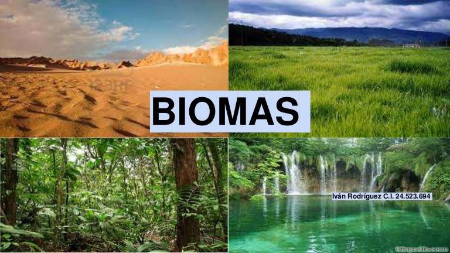

BIOMAS

Un bioma (del griego «bios», vida), también llamado paisaje bioclimático o área biótica es una determinada parte del planeta que comparte el clima, flora y fauna. Un bioma es el conjunto de ecosistemas característicos de una zona biogeográfica que está definido a partir de su vegetación y de las especies animales que predominan. Es la expresión de las condiciones ecológicas del lugar en el plano regional o continental: el clima y el suelo determinan las condiciones ecológicas a las que responden las comunidades de plantas y animales del bioma en cuestión. En función de la latitud, la temperatura, las precipitaciones y la altitud, en definitiva, y de las características básicas del clima, se puede dividir la tierra en zonas de características semejantes; en cada una de esas zonas se desarrolla una vegetación (fitocenosis) y una fauna (zoocenosis) que cuando están relacionadas, definen un bioma, que comprende las nociones de comunidad y la interacción entre suelo, plantas y animales. Los biomas son áreas definidas climática y geográficamente, con similares condiciones ecológicas, tales como las comunidades de plantas y animales, (que a menudo se nombran como ecosistemas). Los biomas están definidos por factores tales como la estructura de las plantas (árboles, arbustos y hierbas), los tipos de hojas (hoja ancha y hoja acicular o agujas), el espaciado de las plantas (cerrado, abierto) y el clima. A diferencia de las ecozonas, los biomas no están definidos por semejanzas genéticas, taxonómicas o históricas. Los biomas con frecuencia se identifican con patrones particulares de sucesión ecológica y vegetación clímax (casi-estado de equilibrio del ecosistema local). Un ecosistema tiene muchos biotopos y un bioma es un tipo mayor de hábitat. Un tipo principal de hábitats, sin embargo, es un compromiso ya que posee una falta de homogeneidad intrínseca. La biodiversidad característica de cada bioma, especialmente la diversidad de la flora y fauna, está en función de factores abióticos que determinan la productividad de la biomasa de la vegetación dominante. En los biomas terrestres, la diversidad de especies tiende a correlacionarse positivamente con la producción primaria neta, con la disponibilidad de humedad y con la temperatura.